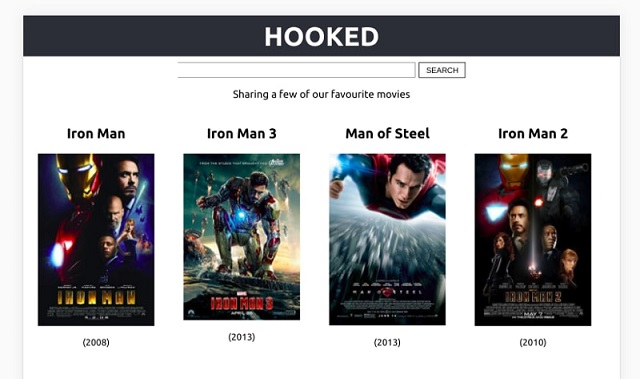
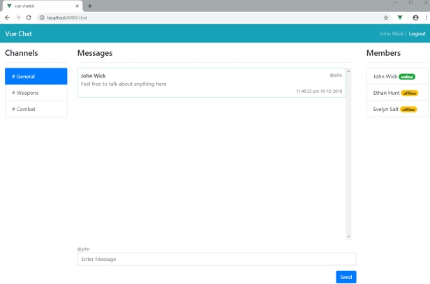
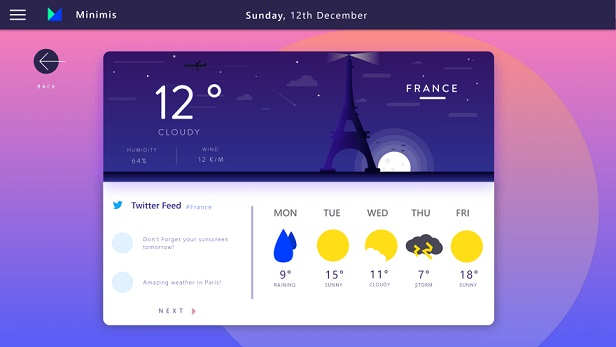
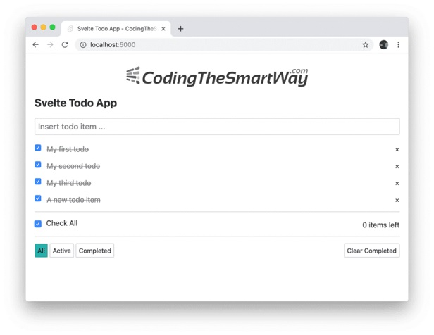
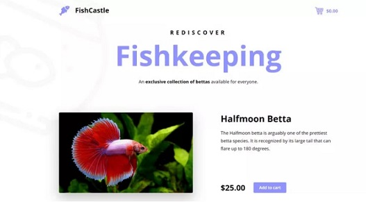
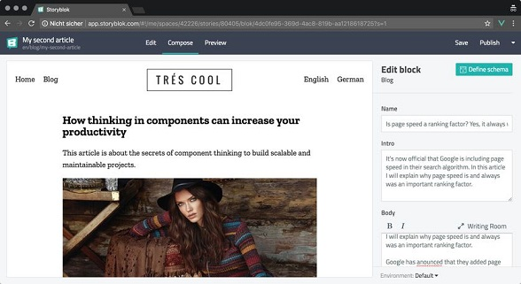
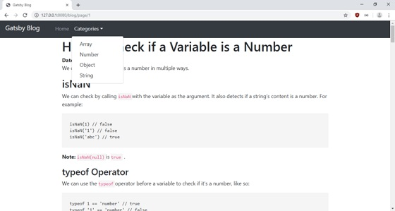
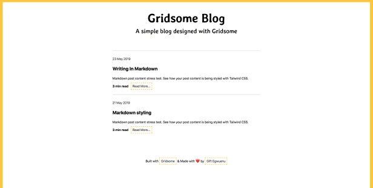
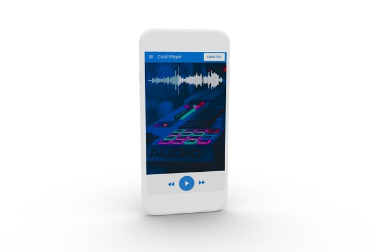

本次预计翻译三篇文章如下：
我为什么要创建这个git仓库？通过翻译国外的web相关的技术文章来学习和跟进web发展的新思想和新技术。git仓库地址：https://github.com/yzsunlei/javascript-article-translate
无论您是编程新手还是经验丰富的开发人员。在互联网这个行业中，必须不断学习新的概念和语言/框架以跟上快速变化的步伐。以React为例 - 4年前由Facebook开源，它现在已经成为全球JavaScript开发人员的首选。Vue和Angular当然也有其相应的追捧者。然后是Svelte，以及Next.js或Nuxt.js等通用框架，以及Gatsby，Gridsome，Quasar等等。如果您想成为一名专业的JavaScript开发人员，那么您至少应该在不同的框架和库中拥有一些实战经验 - 除了使用原生的JS完成工作任务。
为了帮助您在2020年成为前端专家(Frontend Master)，我收集了9个不同的项目，每个项目都有不同的主题和不同的JavaScript框架或库作为技术栈，您可以构建这些项目并将其添加到学习目标中。请记住，没有什么比项目实战(actually building stuff)对您有更大的帮助了，因此，请不断进取(sharpen your mind)，实现这一目标！
首先，您可以使用React构建电影搜索应用程序。下面是应用程序最终的示例图：

构建这个应用程序，您将使用相对较新的Hooks API来提升您的React技能。示例项目利用了React组件，钩子，一个外部api，当然还有一些CSS样式。
不使用任何类，该项目为您提供了功能的完美切入点，并且肯定会在2020年为您提供帮助。您可以在此处找到示例项目：https://www.freecodecamp.org/news/how-to-build-a-movie-search-app-using-react-hooks-24eb72ddfaf7/请按照本教程进行操作，或者按照您自己的方式进行！
对您来说，另一个很棒的项目是使用我最喜欢的JavaScript库VueJS构建聊天应用程序。该应用程序将如下所示：

在本教程之后，您将学习如何从头开始配置Vue应用，创建组件，处理状态，创建路由，连接到第三方服务，甚至处理身份验证。
这真的是一个很棒的项目，可以开始使用Vue或提升您现有的技能以应对2020年的开发。您可以在此处找到该教程：https://www.sitepoint.com/pusher-vue-real-time-chat-app/
此示例将帮助您使用Google的Angular 8构建美观的天气应用程序：

该项目将教您一些宝贵的技能，例如从头开始创建应用程序，从设计到开发，一直到生产部署。
对于这个综合性项目，我真正喜欢的是，您不是单一地学习东西，而是从设计到最终部署的整个开发过程。您应该真正做到这一点！https://medium.com/@hamedbaatour/build-a-real-world-beautiful-web-app-with-angular-6-a-to-z-ultimate-guide-2018-part-i-e121dd1d55e
与React，Vue和Angular相比，Svelte kinda是新手，但仍是2020年的热门话题之一。好的，To-Do应用程序不一定是那里最热门的话题，但这确实可以帮助您提高Svelte技能看起来像这样：

本教程将向您展示如何从头到尾使用Svelte 3制作应用。它应用了组件，样式和事件处理程序。
那里没有很多优秀的Svelte入门项目，因此我觉得这是一个很好的起点。谁知道呢，也许您是在创建另一篇更全面的Svelte教程的人，它将在本帖子的明年版本中介绍？https://medium.com/codingthesmartway-com-blog/building-a-svelte-3-todo-app-from-start-to-deployment-1737f72c23a6
NextJs是用于创建支持应用程序开箱即用的React应用程序的最受欢迎的框架。该项目将向您展示如何构建一个如下所示的电子商务购物车：

在这个项目中，您将学习如何设置Next.js开发环境，创建新页面和组件，获取数据，样式并部署下一个应用程序。
拥有一个真实的例子（例如电子商务展示柜）来学习新的东西总是很高兴。您可以在这里找到该教程：https://snipcart.com/blog/next-js-ecommerce-tutorial
Nuxt.js对Vue的作用是Next.js的反映。一个很好的框架，可以结合服务器端渲染和单页应用程序的功能。您可以创建的最终应用程序将如下所示：

这个示例项目将教您从初始设置到最终部署，如何使用Nuxt.js构建完整的网站。它利用了Nuxt必须提供的许多优秀功能，如页面和组件以及SCSS样式。
这对您来说是一个非常酷的项目，涵盖了Nuxt.js的许多优秀功能。我个人很喜欢使用Nuxt，因此您应该真正尝试使用它，因为它也将使您成为更好的Vue开发人员！https://www.storyblok.com/tp/nuxt-js-multilanguage-website-tutorial
Gatsby是一个出色的静态站点生成器，在后台使用React和GraphQL。这是该项目的结果：

在本教程中，您将学习如何利用Gatsby构建优秀的博客，在使用React和GraphQL的同时可以很好地编写自己的文章。
如果您想创建博客，这是一个很好的示例，说明如何利用React和GraphQL做到这一点。我并不是说Wordpress是一个不好的选择，但是有了Gatsby，您可以在使用React的同时创建高性能站点！https://blog.bitsrc.io/how-to-build-a-blog-with-gatsby-and-boostrap-d1270212b3dc
Gridsome适用于Vue，好吧，我们已经在Next/Nuxt中拥有了，但是Gridsome和Gatsby也是如此。两者都使用GraphQL作为数据层，但是Gridsome使用VueJS。这也是一个很棒的静态站点生成器，它将帮助您创建出色的博客：

该项目将教您如何构建一个简单的博客，以开始使用Gridsome，GraphQL和Markdown。它还介绍了如何通过Netlify部署应用程序。
当然，这不是最全面的教程，但涵盖了Gridsome和Markdown的基本概念，可能是一个很好的起点。
https://www.telerik.com/blogs/building-a-blog-with-vue-and-markdown-using-gridsome
Quasar是另一个Vue框架，也可以用于构建移动应用程序。在这个项目中，您将创建一个音频播放器应用程序，如下所示：

尽管其他项目主要关注Web应用程序，但该项目将向您展示如何通过Quasar框架使用Vue创建移动应用程序。您应该已经配置了Cordova工作环境，并配置了android studio/xcode。如果没有，则在教程中有一个指向quasar网站的链接，他们向您介绍了如何进行设置。
一个小项目，展示了Quasar在构建移动应用程序方面的强大功能。https://www.learningsomethingnew.com/how-to-build-a-sound-cloud-like-audio-player-app-with-vue-js-quasar-and-wave-surfer
在本文中，我向您展示了您可以构建的9个项目，每个项目专注于一个JavaScript框架或库。现在，选择权全由您自己决定：您是否会使用以前未使用的框架来尝试一些新的东西？还是要通过为已经具备一定知识的技术进行项目来增强技能？还是您会依赖自己喜欢的框架/库，并在2020年完成所有项目？随时发表评论，不要忘记关注我，以获取更多即将发布的帖子！
原文链接：https://dev.to/simonholdorf/9-projects-you-can-do-to-become-a-frontend-master-in-2020-n2h